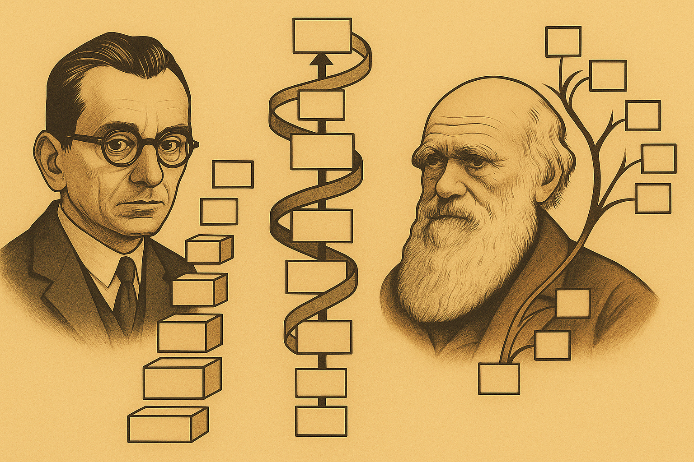

A Glimpse of Agent Evolution
Intelligence, incentives, and the rise of machine coordination
The concept of a world model describes the ability of an intelligent system to internally represent the structure and dynamics of its environment in order to predict future states and evaluate the consequences of actions. Although the term is widely used in contemporary machine learning and robotics, its conceptual origins lie in earlier work in philosophy, psychology, and neuroscience. In 1943, Kenneth Craik proposed that intelligent organisms carry a “small scale model” of external reality that allows them to simulate alternative courses of action before acting in the world. This article traces the intellectual lineage of this idea from philosophical theories of mental representation through early psychological research on perception and cognitive maps, and then connects these foundations to modern machine learning architectures. The article introduces a formal definition of world models using the framework of state transition dynamics and model based reinforcement learning. It then examines how contemporary systems implement world models through latent representations, generative environment simulators, and multimodal predictive architectures. Practical applications such as autonomous driving illustrate how predictive internal models enable agents to anticipate complex environmental interactions. The article also reviews open challenges in the field, including the difficulty of capturing causal structure, integrating multimodal observations, and learning from scalable sources of action conditioned data. Finally, the discussion situates world models within the broader trajectory of artificial intelligence research, highlighting their potential role in the development of embodied systems capable of reasoning about the physical world. More than eighty years after Craik articulated the idea, world models remain one of the most promising conceptual bridges between natural intelligence and the design of autonomous artificial agents.
One of the most powerful ideas about intelligence emerged not from modern artificial intelligence research, but from mid twentieth century psychology.
In 1943, the Cambridge psychologist Kenneth Craik proposed that intelligent organisms carry a small scale model of the world inside their minds. This internal model allows the organism to simulate possible actions and evaluate their consequences before acting in reality.
Craik expressed the idea in a formulation that remains strikingly clear:
“If the organism carries a small scale model of external reality and of its own possible actions within its head, it is able to try out various alternatives, conclude which is the best of them, react to future situations before they arise, utilize the knowledge of past events in dealing with the present and future, and in every way react in a fuller, safer and more competent manner.”
This concept is now widely known as a world model. Today the idea sits at the center of multiple fields: psychology, neuroscience, reinforcement learning, robotics, and autonomous driving. Modern machine learning systems increasingly attempt to learn internal models of the environment that enable planning, prediction, and reasoning.
The trajectory from Craik’s theoretical proposal to contemporary machine learning architectures illustrates a broader scientific pattern: ideas about intelligence often originate in cognitive science before reemerging decades later as computational systems.
Craik’s work did not emerge in isolation. The intellectual roots of world models extend across centuries of philosophy and science.
In the eighteenth century, Immanuel Kant proposed that the human mind does not passively receive reality. Instead, cognition actively organizes sensory inputs through internal conceptual structures. In modern language, Kant argued that perception is mediated by internal representations. The mind constructs a structured interpretation of the world rather than simply recording sensory data.
Although Kant did not frame the idea computationally, his theory introduced a critical premise: intelligent behavior depends on internal models.
In the nineteenth century, Hermann von Helmholtz described perception as a process of unconscious inference. According to Helmholtz, the brain interprets ambiguous sensory signals by making probabilistic inferences about their causes.
The essential insight is predictive: perception is not merely sensation but an inference about the hidden state of the world. This view anticipates modern theories of predictive processing and Bayesian brain hypotheses, where perception is framed as probabilistic model inference.
Craik unified these strands and introduced a sharper formulation. Intelligence arises because an organism can simulate the consequences of actions internally.
His proposal contains three key claims:
This idea transforms intelligence from a purely reactive process into a predictive one. Craik died tragically in 1945 at the age of thirty one after being struck by a car while cycling in Cambridge. Despite his short life, his conceptual contribution remains foundational.
Later work in psychology reinforced the idea that intelligent organisms maintain internal representations of their environment. In 1948, the psychologist Edward Tolman introduced the concept of cognitive maps while studying how rats navigate mazes.
Tolman observed that animals do not merely learn sequences of stimulus–response actions. Instead, they appear to construct internal spatial representations that allow them to infer new paths when familiar routes are blocked.
This finding suggested that organisms possess internal models of their environments that support flexible planning and navigation. Cognitive maps therefore represent one of the earliest empirical demonstrations that biological intelligence relies on internal representations of the world.
Tolman’s work provided experimental support for the broader idea that intelligent behavior depends on internal models of environmental structure, complementing Craik’s earlier theoretical formulation.
At the most fundamental level, a world model is an internal representation of an environment and its dynamics that allows an agent to infer hidden state, predict future evolution, and evaluate the consequences of actions.
Formally, consider an environment described by a hidden state variable:
s_t
An agent performs actions:
a_t
The environment transitions according to unknown dynamics:
s_{t+1} = f(s_t, a_t)
A world model attempts to approximate this function.
\hat{f}(s_t, a_t) \approx s_{t+1}
In other words, the system learns a predictive model of environmental dynamics. With such a model, an agent can simulate possible futures:
s_{t+k} = \hat{f}^k(s_t, a_t)
These simulated trajectories enable planning without interacting with the real environment. From a control theory perspective, the world model becomes a forward model used for predictive control.
The importance of world models becomes clear when comparing two categories of agents:
Reactive agents map observations directly to actions:
a_t = \pi(o_t)
This policy function may be complex, but it does not explicitly represent environmental dynamics. Many early reinforcement learning systems relied on such policies. The limitation is structural: reactive agents cannot reason about hypothetical futures.
Model based agents maintain an internal dynamics model:
\hat{s}_{t+1} = \hat{f}_\theta(s_t, a_t)
Planning then becomes an optimization problem over predicted trajectories:
a_t = \arg\max_a \mathbb{E}[R(s_{t+k})]
The difference is qualitative. Model based agents can imagine outcomes before acting. This property is essential for tasks with delayed consequences, long horizons, or safety constraints. Autonomous driving, robotics, and strategic decision making all fall into this category.
Machine learning research has increasingly converged on architectures that resemble Craik’s internal simulator. Three research directions illustrate this convergence:
Model based reinforcement learning:
Model based reinforcement learning explicitly learns environment dynamics. Instead of interacting with the environment for every experiment, agents can perform simulations inside the learned model. This approach dramatically improves sample efficiency.
Recent work combines neural networks with planning algorithms such as:
The result is a hybrid system combining learned representations and classical control.
Latent world models:
Modern approaches often learn latent state representations rather than explicit physical states. A neural encoder maps observations into a latent space:
z_t = E(o_t)
Dynamics are learned in this compressed representation:
z_{t+1} = f(z_t, a_t)
This architecture underlies systems such as:
The latent state functions as the internal world model. Planning occurs inside this abstract representation rather than directly in pixel space.
Generative video and environment models:
A newer direction attempts to learn full environment simulators using generative models. Examples include video prediction systems and simulation based training environments.
These models attempt to predict future frames of the world conditioned on actions. The ambition is to learn a differentiable simulator of reality. Such simulators can be used for planning, policy learning, or synthetic data generation.
Autonomous driving systems provide a concrete example of why world models matter. A driving agent must reason about:
Reactive systems struggle with this complexity. A vehicle must anticipate situations that have not yet occurred. For example:
A world model allows the system to simulate these scenarios before they unfold. Companies developing end to end driving systems increasingly rely on learned world models to capture the structure of dynamic environments. The principle is precisely the one Craik described: an agent evaluates possible futures internally before acting in the physical world.
At the most basic level, prediction is a fundamental requirement for intelligent behavior. Consider the physical constraint. Actions have consequences that unfold over time. An agent that cannot anticipate consequences must learn purely through trial and error. This approach becomes unsafe or inefficient in complex environments. Prediction therefore becomes a structural requirement for intelligence.
World models implement prediction by learning an approximate causal structure of the environment. In this sense, they represent a convergence between several disciplines:
Each field arrived at similar conclusions through different paths.
Scientific ideas persist when they capture something structurally true about a system. Craik’s insight survives because it reflects a fundamental property of intelligent agents. An organism that can simulate future outcomes internally has a decisive advantage over one that reacts only after events occur. This principle appears repeatedly across biological intelligence.
Animals plan movement trajectories before executing them. Humans mentally rehearse actions. Engineers design systems using predictive models. Machine learning is rediscovering the same architecture. Instead of directly mapping inputs to actions, advanced AI systems increasingly build internal predictive models of the world.
While the concept of a world model originated in psychology and cognitive science, modern AI research increasingly defines the concept in operational terms.
A commonly cited definition describes world models as neural networks that learn the dynamics of the real world, including spatial relationships, physics, and temporal evolution. These models attempt to capture how environments change over time so that an agent can anticipate the consequences of actions.
In practical machine learning systems, the dynamics of the environment are typically modeled as a conditional probability distribution over future states:
P(s_{t+1} \mid s_t, a_t)
where s_t denotes the current state of the environment and a_t denotes an action taken by the agent. The distribution specifies the probability of each possible next state s_{t+1} given the current state and the action performed.
Learning this distribution allows the system to approximate the transition dynamics of the environment. Once such a model is available, the agent can simulate possible future trajectories internally by iteratively sampling predicted states. In this way, the system can evaluate the consequences of alternative actions without needing to execute them in the real environment.
From an engineering perspective, world models are therefore closely related to three technical capabilities:
Learning physical and spatial structure: systems attempt to capture the causal relationships governing motion, interaction, and environment dynamics.
Latent representation learning: observations such as images, sensor readings, or video are compressed into internal representations that capture essential state variables.
Simulation of future trajectories: the system can generate hypothetical future states conditioned on different possible actions.
Because of these properties, world models are often described as internal simulators of reality. Rather than simply recognizing patterns in data, they attempt to reconstruct the underlying structure that generates those patterns.
This shift represents a major conceptual departure from many current AI systems. Large language models, for example, primarily predict the next token in a sequence. By contrast, world models aim to predict the next state of the world.
Recent research has increasingly framed world models as generative simulation systems. Instead of producing a single prediction, these models attempt to generate possible future trajectories of the environment. Such systems are therefore probabilistic simulators of physical and behavioral processes.
This capability becomes essential for planning under uncertainty. An agent must evaluate multiple possible futures before deciding how to act. In practice, modern world models often combine several modules:
Together, these components enable a system to perform counterfactual reasoning. The agent can ask questions of the form: what would happen if I performed action a instead of b? This ability to run internal experiments is precisely what Craik described in 1943.
Despite rapid progress, the concept of world models remains contested in the machine learning community. A recent research paper titled Critiques of World Models1 argues that the field still lacks a precise definition of what constitutes a true world model. The authors describe world models as algorithmic surrogates of real environments that enable intelligent agents to reason and act.
However, they also identify several unresolved issues.
Many systems described as world models differ substantially in architecture and purpose. Some focus on visual prediction. Others emphasize latent dynamics. Still others combine simulation with language reasoning.
This diversity makes it difficult to determine whether a system genuinely possesses a world model or merely performs sophisticated prediction.
Another criticism concerns empirical validation. Many proposed architectures demonstrate impressive results in simplified environments such as video games or synthetic simulations.
However, transferring these models to complex real world environments remains challenging. Some approaches rely on latent space prediction rather than explicit simulation of observable states, and their practical usefulness in large scale real environments is still uncertain.
The same research also proposes a more general architecture for world models based on hierarchical representations combining continuous and discrete structures. Such architectures aim to capture multiple levels of abstraction simultaneously, from low level physical dynamics to higher level reasoning processes.
This direction reflects an important insight. Real environments operate across many scales of description. Physics governs motion, but higher level structures such as objects, agents, and intentions also influence outcomes. A comprehensive world model must therefore represent the environment across multiple conceptual layers.
The development of world models is increasingly viewed as one of the central research challenges for artificial intelligence. Current systems such as large language models excel at processing symbolic information but remain limited in their ability to reason about physical environments, spatial dynamics, and causal interactions.
World models aim to address this gap by learning predictive representations of environments from multimodal data such as video, sensor streams, and interaction logs. These models attempt to capture the structure of reality itself.
The long term ambition is to construct systems capable of:
In effect, the goal is to build machines that possess a computational analogue of the cognitive capability Craik described more than eighty years ago. If this research succeeds, the result will not merely be better pattern recognition systems. It will be artificial agents capable of reasoning about the world they inhabit.
Recent discussion in the machine learning community increasingly contrasts world models with large language models (LLMs). The distinction is not merely architectural. It concerns the type of reality each system attempts to model.
Large language models are trained on sequences of symbols. Formally, they approximate the conditional probability:
P(x_{t+1} \mid x_1, x_2, \ldots, x_t)
where x_t represents a token in a sequence. The learning objective is next token prediction.
This training objective produces systems that capture statistical regularities in human language. Because human text encodes knowledge about the world, LLMs can demonstrate reasoning ability, factual recall, and structured problem solving.
However, the underlying model is still a distribution over text sequences. World models operate on a different principle. Instead of predicting tokens, they attempt to predict environmental state transitions:
P(s_{t+1} \mid s_t, a_t)
Here s_t represents the state of the environment and a_t represents an action performed by an agent. The model learns how the world evolves when actions occur.
This difference is fundamental. Language models describe how humans talk about the world. World models attempt to capture how the world itself changes.
The distinction becomes clearer when considering the type of knowledge represented by each system.
Large language models primarily encode:
World models attempt to encode:
An LLM may be able to explain the rules of driving. A world model must predict how vehicles, pedestrians, and traffic signals evolve in a real physical environment. For applications involving embodied agents, this difference becomes critical.
Robots, autonomous vehicles, drones, and industrial systems interact with environments governed by physical laws. Decisions must therefore be based on predictive models of those dynamics.
Some researchers describe the convergence of these ideas as the emergence of physical AI. Physical AI refers to systems capable of understanding and predicting the physical world through interaction and observation. The term reflects a shift in focus from purely digital tasks toward systems embedded in real environments.
Such systems require several capabilities simultaneously:
World models provide the predictive core of such systems. Instead of reacting directly to observations, the system constructs an internal simulation of the environment. Possible actions are evaluated within this simulation before execution in the real world.
This architecture mirrors the mechanism Craik proposed in 1943: intelligence emerges when an agent can test alternatives internally before committing to real actions.
The distinction between language models and world models should not be interpreted as a competition between two incompatible approaches. In practice, many researchers expect future systems to combine both.
Language models provide powerful tools for reasoning, communication, and knowledge representation. World models provide predictive representations of physical environments.
An integrated architecture might therefore include:
Such hybrid systems could reason about abstract goals using language while evaluating physical feasibility through simulation. In this sense, world models may represent the missing component required to extend current AI systems from purely informational domains into the physical world.
If this trajectory continues, Craik’s eighty year old insight may become the conceptual foundation for the next generation of intelligent machines: systems that do not merely process information, but actively model and anticipate the dynamics of the environments they inhabit.
A key challenge in building practical world models is efficiency. A system must be able to represent the dynamics of the environment while remaining computationally tractable for long horizon reasoning.
Recent work frames the world modeling problem using the formal structure of reinforcement learning environments. In this view, the environment can be described as a Partially Observable Markov Decision Process (POMDP). The world model approximates the transition probability:
P(s' \mid s, a)
where s represents the current state of the world, a represents an action taken by an agent, and s' represents the resulting state after the action occurs.
However, in real environments the true world state s is rarely observable. Instead, agents receive partial observations o derived from sensors such as vision, audio, or other modalities. The agent must therefore infer the underlying state of the environment from incomplete information.
This introduces a layered modeling problem:
The world model acts as the predictive core that connects these components.
Another important direction concerns multimodal world models. The world is not experienced through a single data modality. Real environments involve multiple information channels including:
A comprehensive world model must therefore integrate signals from multiple sources. For example, a language model may implicitly encode knowledge about social interactions and physical events through text. However, the physical world contains information that cannot be fully captured through language alone. Visual signals provide spatial relationships, motion, and physical constraints that are difficult to represent in purely textual form.
As a result, many researchers expect future world models to combine language, vision, and other modalities into unified predictive systems.
Many current approaches attempt to construct world models using video generation systems that predict future frames of visual data. Such models estimate distributions of the form:
P(o' \mid o, a)
where o and o' represent successive visual observations.
These systems can generate impressive visual simulations. However, modeling the world purely at the level of pixels can be inefficient and may fail to capture the underlying causal structure of environments.
For example, a model might generate a realistic video of a car turning a corner. But unless the system understands the causal relationships between steering input, tire friction, and vehicle motion, it cannot reliably reason about the consequences of different actions.
This distinction highlights a broader challenge in world modeling: high fidelity sensory prediction is not the same as causal understanding.
One proposed solution is to incorporate semantic abstractions into world models.
Humans rarely represent the world at the level of raw sensory signals. Instead, cognition relies on higher level concepts such as objects, agents, intentions, and causal relationships. These abstractions dramatically compress the complexity of the environment. For example, a person planning how to cross a street does not simulate every pixel in their visual field. Instead, they reason about objects such as vehicles, pedestrians, and traffic signals.
Symbolic systems such as language, mathematics, and programming provide powerful tools for expressing such abstractions. These representations allow models to focus their computational resources on aspects of the environment that matter for decision making.
From an information theoretic perspective, abstraction functions as a compression mechanism that preserves causal structure while discarding irrelevant sensory detail.
Another challenge in building world models is obtaining appropriate training data. Large quantities of video data exist, but most of it does not contain explicit records of the actions that caused observed events. Without information about actions, a model cannot learn how interventions change the environment.
Training world models therefore requires action conditioned data. One proposed approach is to use interactive environments such as digital simulations or games. These environments provide large quantities of data where actions and outcomes are explicitly recorded.
Such environments create a natural data generation loop: agents interact with the environment, generate trajectories of states and actions, and use those trajectories to train predictive models. Over time, these models may generalize from virtual environments to real physical systems.
The broader hypothesis emerging from this research is that effective world models must balance three competing objectives:
Achieving this balance likely requires a combination of sensory perception, abstract symbolic reasoning, and predictive simulation.
If successful, such systems would embody the principle articulated by Kenneth Craik more than eighty years ago: intelligent behavior emerges when an agent can internally simulate the consequences of its actions before acting in the world.
The idea of a world model began as a psychological hypothesis about how intelligent organisms reason about their environment. Kant argued that perception depends on internal conceptual structures. Helmholtz described perception as a form of unconscious inference. Craik later articulated the idea more explicitly: intelligent systems carry internal models of the world that allow them to simulate possible futures before acting.
Over time, this intuition became formalized within the mathematical frameworks of control theory and reinforcement learning. In these frameworks, an intelligent agent maintains a predictive model of environmental dynamics and uses that model to evaluate the consequences of potential actions.
Modern machine learning is now rediscovering this principle at scale. World models appear in model based reinforcement learning, latent state architectures, multimodal predictive systems, and increasingly in the design of autonomous agents operating in complex environments.
Despite this progress, several challenges remain open. Effective world models must capture causal structure rather than mere statistical correlation. They must integrate multiple modalities such as vision, language, and physical interaction. They must remain computationally efficient while supporting long horizon reasoning. And they must be trained using data sources that reflect the consequences of actions in real environments.
For these reasons, the development of world models is increasingly viewed as a central research direction for artificial intelligence. If successful, these systems may move AI beyond passive pattern recognition toward agents capable of reasoning about the dynamics of the environments they inhabit.
More than eighty years after Craik proposed the idea, the notion that intelligence depends on internal simulations of reality continues to shape both scientific theory and technological development. World models represent one of the clearest bridges between the study of natural intelligence and the design of artificial systems.
Craik, K. J. W. (1943). The Nature of Explanation. Cambridge University Press.
Friston, K. (2010). The free energy principle: A unified brain theory?. Nature Reviews Neuroscience. DOI
Ha, D., & Schmidhuber, J. (2018). World models. arXiv. DOI
Hafner, D. et al. (2020). Dream to Control: Learning Behaviors by Latent Imagination. ICLR.
Helmholtz, H. von. (2005). Treatise on physiological optics (J. P. C. Southall, Trans.; Vol. 3). Dover Publications.
Kant, I. (1998). Critique of Pure Reason. (P. Guyer & A. W. Wood, Eds.). Cambridge University Press.
Schrittwieser, J. et al. (2020). Mastering Atari, Go, Chess and Shogi by Planning with a Learned Model. Nature. DOI
Tolman, E. C. (1948). Cognitive maps in rats and men. Psychological Review, 55(4), 189–208. DOI

